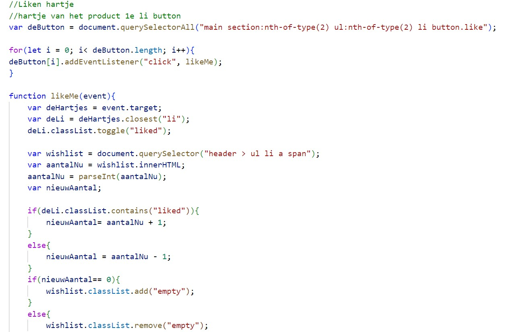
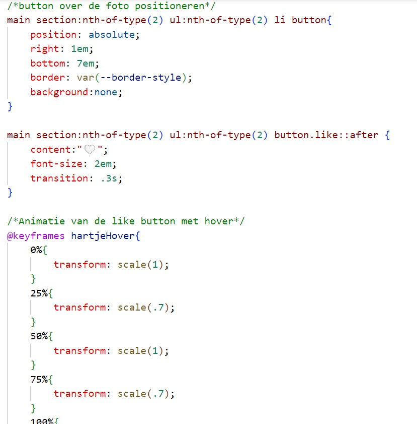

Website H&M
Voor het vak front-end moesten we een bestaande website optimaliseren. We moesten hem zo coderen dat hij beter toegankelijk was voor mensen met een beperking.
Het materiaal wat ik moest maken moest in dezelfde stijl als de website gemaakt worden. Ik moest hierbij rekening houden met de kleuren, lettertype en schrijfstijl van de gemeenteraads website. Verder werd ik hierin compleet vrij gelaten.
Hiernaast heb ik de code van Javascript en Css voor het liken van een hartje. Hiervoor heb ik met css een icoon toegevoegd en deze verander ik door middel van Javascript.
Wilt u meer zien van deze pagina? Klik dan op deze link:
Bezoek mijn H&M website

